Metode CLUSTERING
K-MEAN¶
K-means merupakan salah satu algoritma clustering . Tujuan algoritma ini yaitu untuk membagi data menjadi beberapa kelompok. Algoritma ini menerima masukan berupa data tanpa label kelas. Hal ini berbeda dengan supervised learning yang menerima masukan berupa vektor (x1 , y1) , (x2 , y2) , …, (xi , yi), di mana xi merupakan data dari suatu data pelatihan dan yi merupakan label kelas untuk xi .
Pada algoritma pembelajaran ini, komputer mengelompokkan sendiri data-data yang menjadi masukannya tanpa mengetahui terlebih dulu target kelasnya. Pembelajaran ini termasuk dalam unsupervised learning. Masukan yang diterima adalah data atau objek dan k buah kelompok (cluster) yang diinginkan. Algoritma ini akan mengelompokkan data atau objek ke dalam k buah kelompok tersebut. Pada setiap cluster terdapat titik pusat (centroid) yang merepresentasikan cluster tersebut.
Objective function yang berusaha diminimalkan oleh k-means adalah:
J (U, V) = SUM (k=1 to N) SUM (i=1 to c) (a_ik * (x_k, v_i)^2)
dimana: U : Matriks keanggotaan data ke masing-masing cluster yang berisikan nilai 0 dan 1 V : Matriks centroid/rata-rata masing-masing cluster N : Jumlah data c : Jumlah cluster a_ik : Keanggotaan data ke-k ke cluster ke-i x_k : data ke-k v_i : Nilai centroid cluster ke-i
Prosedur yang digunakan dalam melakukan optimasi menggunakan k-means adalah sebagai berikut: Step 1. Tentukan jumlah cluster Step 2. Alokasikan data ke dalam cluster secara random Step 3. Hitung centroid/rata-rata dari data yang ada di masing-masing cluster. Step 4. Alokasikan masing-masing data ke centroid/rata-rata terdekat Step 5. Kembali ke Step 3, apabila masih ada data yang berpindah cluster atau apabila perubahan nilai centroid, ada yang di atas nilai threshold yang ditentukan atau apabila perubahan nilai pada objective function yang digunakan, di atas nilai threshold yang ditentukan
Centroid/rata-rata dari data yang ada di masing-masing cluster yang dihitung pada Step 3. didapatkan menggunakan rumus sebagai berikut:
v_ij = SUM (k=0 to N_i) (x_kj) / N_i
dimana: i,k : indeks dari cluster j : indeks dari variabel v_ij : centroid/rata-rata cluster ke-i untuk variabel ke-j x_kj : nilai data ke-k yang ada di dalam cluster tersebut untuk variabel ke-j N_i : Jumlah data yang menjadi anggota cluster ke-i
Sedangkan pengalokasian data ke masing-masing cluster yang dilakukan pada Step 4. dilakukan secara penuh, dimana nilai yang memungkinkan untuk a_ik adalah 0 atau 1. Nilai 1 untuk data yang dialokasikan ke cluster dan nilai 0 untuk data yang dialokasikan ke cluster yang lain. Dalam menentukan apakah suatu data teralokasikan ke suatu cluster atau tidak, dapat dilakukan dengan menghitung jarak data tersebut ke masing-masing centroid/rata-rata masing-masing cluster. Dalam hal ini, a_ik akan bernilai 1 untuk cluster yang centroidnya terdekat dengan data tersebut, dan bernilai 0 untuk yang lainnya.
dibawah adalah contoh program data cancer yang menggunakan metode K-Means
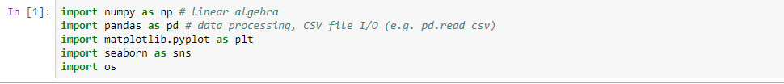
gambar diatas menunjukan bahwa kita harus meng import library seperti pandas untuk memuat file ke dalam data virtual ala spreadsheet dan numpy untuk operasi vektor dan matriks
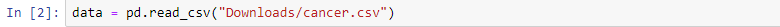
gambar diatas berfungsi untuk mengambil data yang berada didalam file Downloads dengan nama file cancer.csv
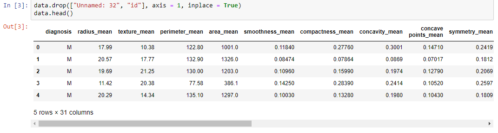
gambar diatas menunjukan list data yang akan digunakan
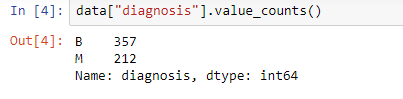
menunjukan bahwa ada data yang berlabel B357, M212 dan nama: diagnosis dengan type:int64

gambar diatas menunjukan pengidentifikasian label
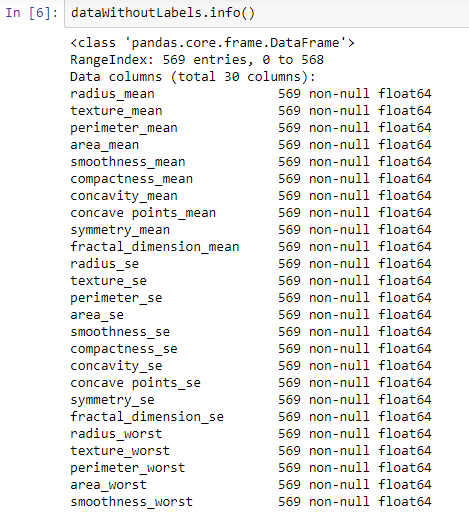
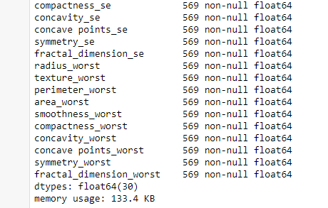
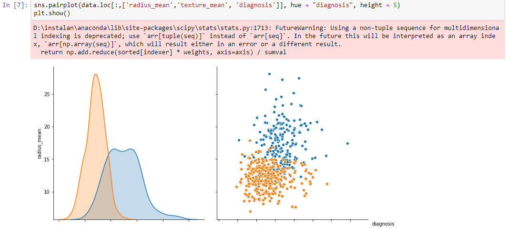

radius_mean dan fitur tekstur_mean akan digunakan untuk pengelompokan. Sebelum proses pengelompokan mari kita periksa bagaimana data kita terlihat
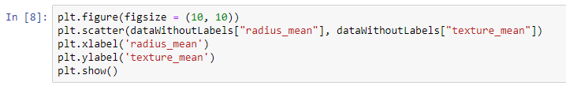
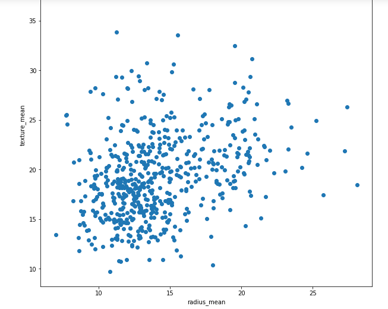
gambar diatas menunjukan bahawa Data diatas terlihat seperti plot tanpa label diagnosis
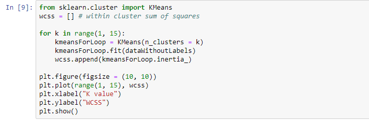
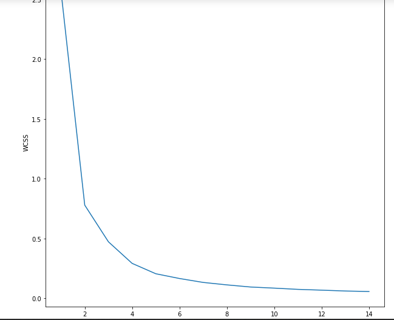
- Tentukan pusat K dan data kluster,
- Tetapkan centroid acak, Poin data cluster berdasarkan jarak dari centroid (jarak euclidean),
- Ulangi langkah 3 hingga posisi centroid mulai tidak berubah.

Titik siku mulai dari 2
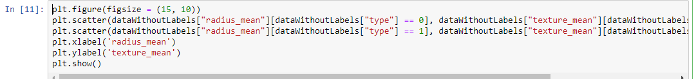

Plot data setelah k = 2 clustering
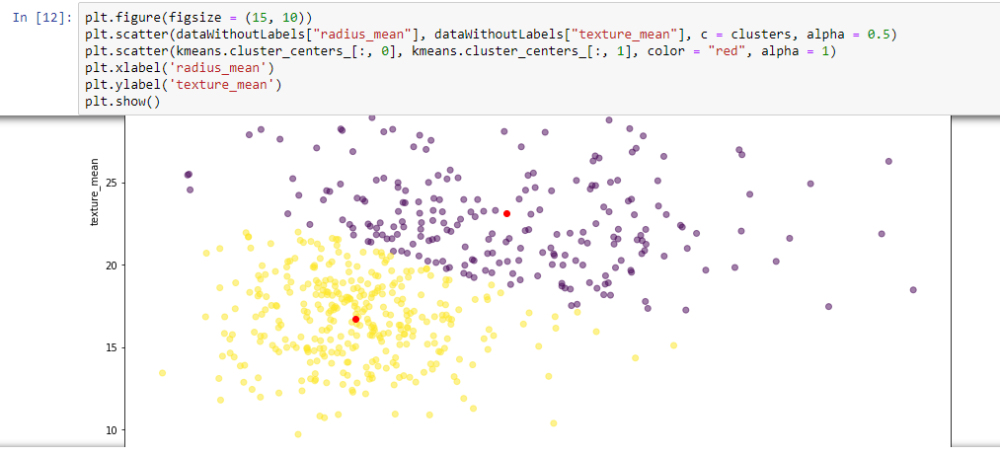
Sentuhan data tengah dari clustered scatters
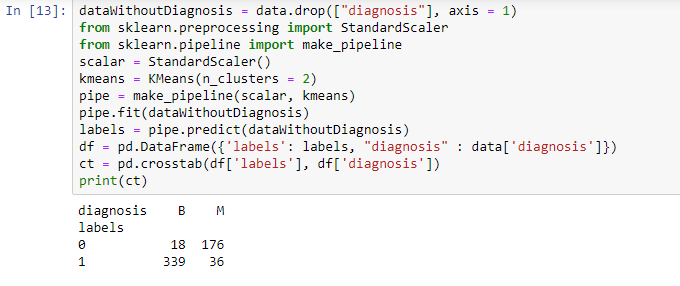
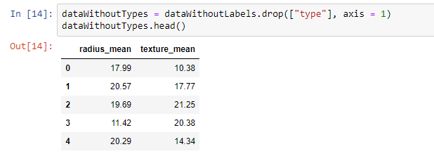

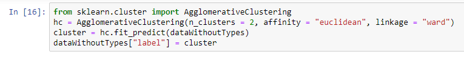
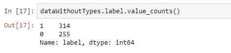
CLUSTERING HIERARCHICAL
- Setiap titik data ditransformasikan menjadi cluster,
- Buat cluster menggunakan 2 titik data terdekat,
- Buat kluster menggunakan 2 klaster terdekat
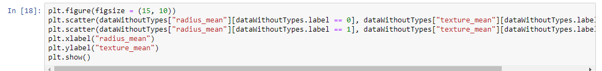
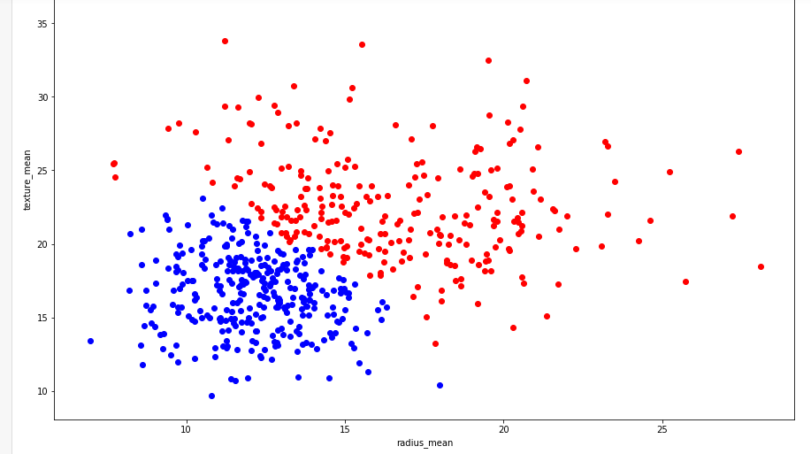
Data setelah pengelompokan hierarkis